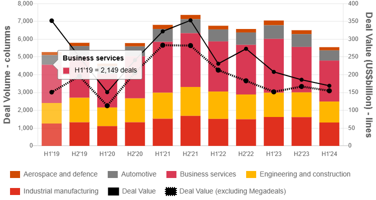

ZYREC CONSTRUCTIONS
Building with Precision, Powered by Trust.
2024 Mid-Year Outlook: Global M&A Trends In Industrial & Services
admin
November 1, 2024
The industrials and services (I&S) sector is expected to see a steady pace of deal activity throughout the remainder of 2024. Despite continued market challenges, including high interest rates and regulatory concerns, both buyers and sellers are increasingly turning to the M&A market to drive further growth and value creation.
In the current market environment, companies are evaluating their portfolio performance to determine whether to divest non-core assets to fund strategic and corporate investments. Strategic divestitures are seen as a way to improve capital allocation and reinvest in new segments.
While sellers are seeking to optimise their portfolios for growth and profitability, these internal assessments are revealing gaps in technologies and capabilities. I&S companies are looking for new technologies or digital capabilities to respond to disruptive forces, stay competitive, and expand their market presence through transformation. Consequently, artificial intelligence (AI), automation, digital transformation and other technological advancements are strategic areas of focus for M&A opportunities.
Industry consolidation combined with a focus on strategic growth and diversification is also expected to drive increased M&A activity. We expect to see continued consolidation of small to medium-sized companies that have been negatively affected by macro- and microeconomic conditions.
Deal volumes and values in industrials and services decreased by 21% and 19%, respectively, between the first half of 2023 and the first half of 2024. The global trend was partly a response to the challenging macroeconomic and geopolitical environment, although regional performance varied. Over the same period, deal volumes were down 25% in Europe, the Middle East and Africa (EMEA); 24% in the Americas; and 13% in Asia Pacific. Asia Pacific was buoyed by stronger M&A activity in India, South Korea, Australia and Japan. Deal values told a different story, with the Americas up 23% thanks to several US megadeals, while EMEA and Asia Pacific were down by 27% and 45%, respectively.
Performance also varied across sectors. M&A activity in aerospace and defence (A&D) decreased by 32% between the first half of 2023 and the first half of 2024, followed by automotive with a 25% decline over the same period. Even the more resilient business services sector saw a decrease of 24% in deal volume in the first half of the year. Deal values decreased across all sectors except engineering and construction.
In the sector spotlights below, we outline the trends we expect to drive M&A activity in A&D, automotive, business services, engineering and construction, and industrial manufacturing in the second half of 2024.
Go back